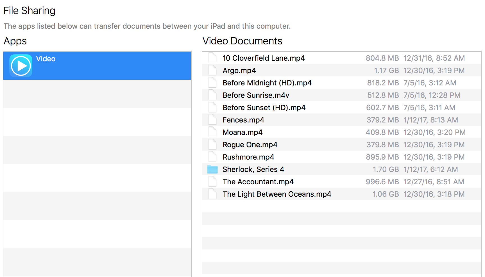

Videos App
This is a guide to walk you through how to use my video app, available on the App Store here.
New movies and TV Shows are added through iTunes File Sharing, which means the iPad has to be connected to any iTunes capable computer.
In order for TV Shows to show up in the right Tab they have to be in a folder, named like the show.
I personally use the free program Subler to tag my files with metadata, like artwork, description, title, etc. 
Currently the app supports .mov, .mp4 and .m4v files which have to be DRM free. All other files will be ignored or are not playable. Please also make sure, that you toggle off the app contents in your iCloud backup, otherwise it will eat up your storage.
Newly added files might not show up right away, if so you have to restart the app (swipe up in multitasking and reopen).
For more questions you can contact me here.